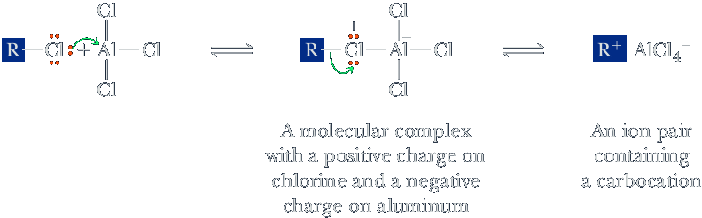
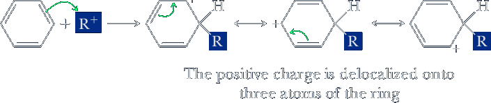
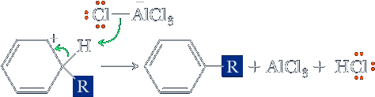

Friedel-Crafts Alkylation and Acylation
Alkylation of aromatic hydrocarbons was discovered in 1877 by the French chemist Charles Friedel and a visiting American chemist, James Crafts. They discovered that mixing benzene, an alkyl halide, and AlCl3 results in the formation of an alkylbenzene and HX. Friedel-Crafts alkylation, which is among the most important methods for forming new carbon-carbon bonds to aromatic rings, is illustrated here by the reaction of benzene with 2-chloropropane in the presence of aluminum chloride.
| Benzene | + | 2-Chloropropane (Isopropyl chloride) |
AlCl3 ⟶ | Cumene (Isopropylbenzene) | + | HCl |
The mechanism for Friedel-Crafts alkylation, like that for halogenation, nitration, and sulfonation, involves the attack of the aromatic ring onto a strong electrophile, in this case a carbocation formed by reaction between the alkyl halide and the Lewis acid catalyst.
Mechanism
Step 1: Lewis acid-Lewis base reaction.: The alkyl halide (a Lewis base) and aluminum chloride (a Lewis acid) form a complex in which aluminum has a negative charge and the halogen of the alkyl halide has a positive charge. The alkyl group can also be written as a carbocation. It is unlikely, however, that a free carbocation is actually formed, especially in the case of the relatively unstable primary and secondary carbocations. Nonetheless, we often represent the reactive intermediate as a carbocation to simplify the notation of the mechanism.
Step 2: Make a new bond between a nucleophile (arene ring) and an electrophile. Reaction of the carbocation (a strong electrophile) with the π electrons (a weak nucleophile) of the aromatic ring gives a resonance-stabilized cation intermediate.
Step 3: Take a proton away. Proton transfer regenerates the ring aromaticity.
Halogen atoms on sp2-hybridized carbons (vinylic and aryl halides) do not react to produce electrophiles under conditions of the Friedel-Crafts alkylation because of the high activation energy required to form these carbocations.
Limitations of Friedel-Crafts Alkylations
The alkylation of benzenes under Friedel-Crafts conditions is accompanied by two important side reactions: One is polyalkylation; the other, carbocation rearrangement. Both cause the yield of the desired products to diminish and lead to mixtures that may be diffi cult to separate. Consider first polyalkylation. Benzene reacts with 2-bromopropane in the presence of FeBr3 as a catalyst to give products of both single and double substitution. The yields are low because of the formation of many by-products.
+ (CH3)2CHBr
FeBr3
⟶
Cumene
(Isopropylbenzene)
+
1,4-Diisopropylbenzene
(p-Diisopropylbenzene)
The electrophilic aromatic substitutions that we studied earleir on like Bromination, nitration can be stopped at the monosubstitution stage. Why do Friedel-Crafts alkylations have the problem of multiple electrophilic substitution? It is because the substituents differ in electronic structure (a subject discussed in more detail in Chapter 16). Bromination, nitration, and sulfonation introduce an electronwithdrawing group into the benzene ring, which renders the product less susceptible than the starting material to electrophilic attack. In contrast, an alkylated benzene is more electron rich than unsubstituted benzene and thus more susceptible to electrophilic attack.
The second side reaction in aromatic alkylation is skeletal rearrangement:
+ CH3CH2CH2Br ⟶AlCl3
(Isopropylbenzene)
Because of these limitations, Friedel-Crafts alkylations are rarely used in synthetic chemistry. Can we improve this process? A more useful reaction would require an electrophilic carbon species that could not rearrange and that would, moreover, deactivate the ring to prevent further substitution. There is such a species — an acylium cation — and it is used in the second Friedel-Crafts reaction, the topic of the next section.
Friedel-Crafts alkanoylation (acylation)
The second electrophilic aromatic substitution that forms carbon – carbon bonds is Friedel-Crafts alkanoylation (as in butanoylation, pentanoylation, and so on). A more popular alternative systematic name for this process is acylation, which is the term we shall use. Acylation proceeds through the intermediacy of acylium cations, with the general structure RC≡O:+. This section describes how these ions readily attack benzene to form ketones, as illustrated by the reaction of benzene and acetyl chloride in the presence of aluminum chloride to form acetophenone.
+
(Acetyl chloride)
AlCl3
⟶
(a ketone)
+ HCl
Because the newly introduced acyl substituent is electron withdrawing, it deactivates the ring and protects it from further substitution, overcoming the third limitation of the alkylation reaction.
Mechanism
Friedel-Crafts acylation begins with the donation of a pair of electrons from the halogen of the acyl halide to aluminum chloride to form a molecular complex similar to what we drew for Friedel-Crafts alkylations. In this complex, halogen has a positive formal charge and aluminum has a negative formal charge.

A strong complex between the aluminum chloride catalyst and the carbonyl function of the product ketone can form.
This complexation removes the AlCl3 from the reaction mixture and necessitates the use of at least one full equivalent of the Lewis acid to allow the reaction to go to completion. Aqueous work-up is necessary to liberate the ketone from its aluminum chloride complex, as illustrated by the following examples.
+
AlCl3
⟶
(1.7 equivalents)
H2O, H+
+ HCl
Single substitution allows for the selective introduction of carbon chains into the benzene nucleus, a task that proved difficult to accomplish by Friedel-Crafts alkylation (Section 15-12). Since we know how to convert the carbonyl function into an alcohol by hydride reduction (Section 8-6) and the hydroxy substituent into a leaving group that can be further reduced by hydride (Section 8-7), we can synthesize the corresponding hydrocarbon. This sequence of acylation – reduction constitutes a roundabout alkylation protocol that occurs selectively. We shall encounter more direct “deoxygenations” of carbonyl groups later (Sections 16-5 and 17-10).